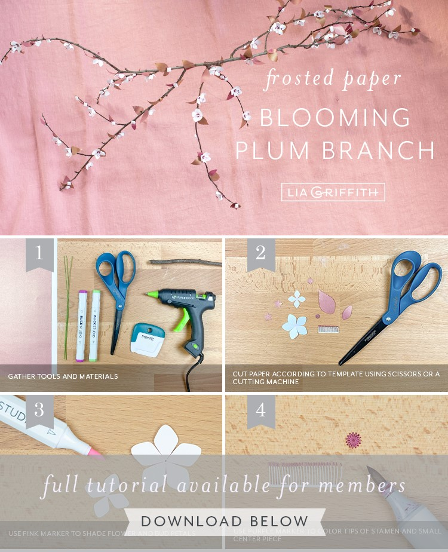

Frosted paper plum blossom branch
There is something a little magical about seeing all of the plants coming back to life in the springtime and the trees blossoming brightly with pretty little flowers. So why not bring that sweet, happy feeling indoors? Today we’re showing you how to make a beautiful frosted paper plum blossom branch using our paper flower pattern and a real branch. This is a great project for all skill levels — and you can either cut your paper flowers by hand or use your cutting machine.
A Berry Pretty Branch
Blossoming branches make such beautiful home decor. But a cut blossom branch will only last about two weeks — and all the flowers will get everywhere! So crafting your own out of paper is a great way to enjoy this gorgeous spring visual for as long as you want. To make our frosted paper plum blossom branch, we used one of the colors in our Berry Pack and one from our Citrus Pack. The light shimmer makes these paper flowers look so pretty — especially when they catch the light! For added detail, we also colored our petals and leaves, which we will show you how to do in our step-by-step tutorial. Once you have crafted your frosted paper plum blossom branch, you can use it as home decor or as a table centerpiece for a special event.Tools
- Cricut Explore Air 2
- Craft Scissors
- High-Temp Hot Glue Gun
- Curling Tool
- Needle-Nose Pliers/Wire Cutters
Materials
- Lia Griffith Frosted Craft Paper – Berry Pack: Color 4 and Citrus Pack: Color 4
- 24-Gauge Green Paper Covered Wire
- High-Temp Hot Glue Gun
- Spring Green (043), Very Berry (004), and Rose Petal (006)
- Dried Tree Branch

Link to the author's page